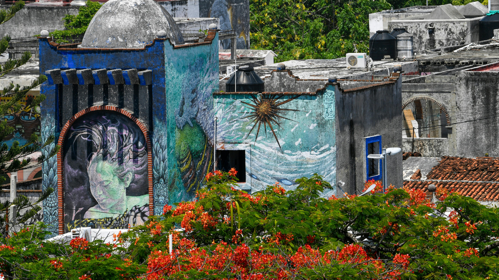

On Saturday, the Moon in Aquarius squares the Sun in Taurus, both at 19°14’. Under this sky, we are made aware of our function in community, friend groups, networks, and family dynamics, and how well these groups function for us.
Are we growing and progressing? Are we maintaining unequal power dynamics? Are our efforts serving the greater good? Are we too comfortable to care?
As a collective, how can we advance if leadership is stuck on conserving outdated traditions? Is detachment a means of survival or can we stay grounded by finding pathways to self-sufficiency and building with sustainability? It may be a mix of both until we have a clearer path forward.
Where am I receiving support, and what is expected in return?
Am I staying in something because it is sustaining me, or because I do not feel ready to leave?
What kind of systems, people, or structures am I feeding or being fed by, and does that feel sustainable or limiting?
Where am I choosing stability over change, or what is idealistic over what I can ground and build on?
How does my voice function authentically in the world?